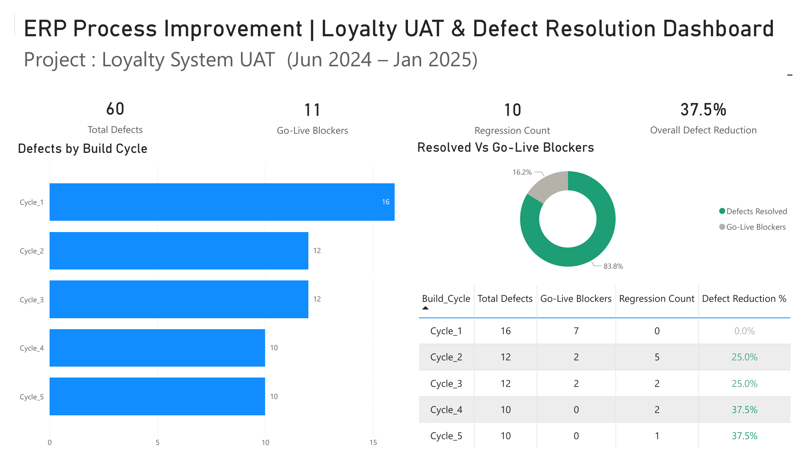

BA + UAT Lead role for a points-based student recognition system built on XeerSoft CRM module. Detected critical entry defect on first test cycle, led 5 iterative UAT build cycles managing 60 defects with structured reproduction steps to achieve zero critical post-launch incidents across 50+ members.

The school required a points-based student recognition system — teachers assign 'stars' to students for behaviour and achievement; students redeem accumulated stars for certificates and rewards (comparable to a Starbucks loyalty model).
I joined the project mid-implementation, with XeerSoft development already in progress on the custom CRM logic. Within the first UAT cycle, I identified a critical defect that would have blocked Go-Live — and proceeded to lead 5 iterative test cycles through to deployment.
Symptom: Bulk star-point assignment to multiple students simultaneously was non-functional — only the first student received points; all others were silently skipped.
Root cause (identified by Dev after my escalation): The assignment function contained a loop with an inadvertent early exit after the first iteration.
Severity: P1 — would silently fail in production with no error message, making it the hardest type of bug to detect post-launch.
I structured UAT into 5 build cycles, each with explicit entry criteria, test scenarios, and exit gates. The defect log was the central artifact — every defect tracked from OPEN → IN-DEV → RETEST → RESOLVED with reproduction steps, severity, and regression test status.
| Cycle | Total Defects | Go-Live Blockers | Regression Count | Reduction % |
|---|---|---|---|---|
| Cycle 1 | 16 | 7 | 0 | baseline |
| Cycle 2 | 12 | 2 | 5 | ▼ 25% |
| Cycle 3 | 12 | 2 | 2 | ▼ 25% |
| Cycle 4 | 10 | 0 | 2 | ▼ 37.5% |
| Cycle 5 | 10 | 0 | 1 | ▼ 37.5% |
Loyalty systems aren't a standard SAP module — this project demonstrates BA + UAT skills transferable to any custom development context. Below maps the testing concepts to SAP equivalents.
| # | XeerSoft Activity (executed) | SAP Equivalent (reference) |
|---|---|---|
| 1 | Custom Module Test Case Authoring | SAP Solution Manager · Test Plan |
| 2 | Defect Log with Repro Steps | SAP Solman Defect Mgmt · ChaRM |
| 3 | Function Debug Session | SE38 · Debug Mode |
| 4 | Regression Testing across Build Cycles | SAP eCATT Scenario Replay |
| 5 | Sign-Off Approval per Cycle | SAP UAT Sign-Off Protocol |
Beyond the bulk assignment fix, UAT validated:
· Voucher security controls — preventing duplicate redemption of same voucher
· Points redemption logic — partial vs full redemption, balance verification
· Campaign triggers — automated points award on configured events
· Regression testing — verified individual assignment still worked after bulk fix
· Audit trail — every transaction traceable via star log
The biggest takeaway: UAT isn't just confirming what works — it's hunting for what fails silently. The bulk-assignment bug would have been invisible in production for months because there was no error message. Finding it required deliberately testing the edge case (multi-student selection) rather than the happy path (single student). Every UAT plan I write now starts with "what could fail without anyone noticing?"